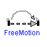
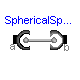
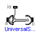
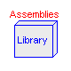
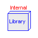
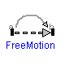
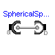
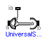
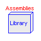
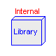
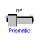
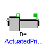
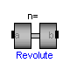
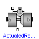
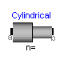
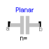
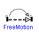
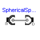
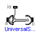
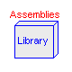
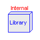
This package contains joint components, that is, idealized, massless elements that constrain the motion between frames. In subpackage Assemblies aggregation joint components are provided to handle kinematic loops analytically (this means that non-linear systems of equations occuring in these joint aggregations are analytically solved, i.e., robustly and efficiently).
| Name | Description |
|---|---|
| Prismatic | Prismatic joint (1 translational degree-of-freedom, 2 potential states) |
| ActuatedPrismatic | Actuated prismatic joint (1 translational degree-of-freedom, 2 potential states) |
| Revolute | Revolute joint (1 rotational degree-of-freedom, 2 potential states) |
| ActuatedRevolute | Actuated revolute joint (1 rotational degree-of-freedom, 2 potential states) |
| Cylindrical | Cylindrical joint (2 degrees-of-freedom, 4 potential states) |
| Universal | Universal joint (2 degrees-of-freedom, 4 potential states) |
| Planar | Planar joint (3 degrees-of-freedom, 6 potential states) |
| Spherical | Spherical joint (3 constraints, no potential states) |
| FreeMotion | Free motion joint (6 degrees-of-freedom, 12 potential states) |
| SphericalSpherical | Spherical - spherical joint aggregation (1 constraint, no potential states) with an optional point mass in the middle |
| UniversalSpherical | Universal - spherical joint aggregation (1 constraint, no potential states) |
| Assemblies | Joint aggregations for analytic loop handling |
| Internal | Components used for analytic solution of kinematic loops (use only if you know what you are doing) |

Joint where frame_b is translated along axis n which is fixed in frame_a. The two frames coincide when "s + s_offset = 0", where "s_offset" is a parameter with a zero default and "s" is the relative distance.
In the "Advanced" menu it can be defined via parameter enforceStates that the relative distance "s" and its derivative shall be definitely used as states (this means that the Modelica attributes stateSelect=StateSelect.always are set on these variables). The states are usually selected automatically. In certain situations, especially when closed kinematic loops are present, it might be slightly more efficient, when using the "enforceStates" setting.
| Name | Default | Description |
|---|---|---|
| animation | true | = true, if animation shall be enabled |
| n | {1,0,0} | Axis of translation resolved in frame_a (= same as in frame_b) |
| s_offset | 0 | Relative distance offset (distance between frame_a and frame_b = s_offset + s) [m] |
| initType | Types.Init.Free | Type of initialization (defines usage of start values below) |
| s_start | 0 | Initial value of distance (fixed or guess value) [m] |
| v_start | 0 | Initial value of relative velocity v = der(s) [m/s] |
| a_start | 0 | Initial value of relative acceleration a = der(v) [m/s2] |
| boxWidthDirection | {0,1,0} | Vector in width direction of box, resolved in frame_a |
| boxWidth | world.defaultJointWidth | Width of prismatic joint box [m] |
| boxHeight | boxWidth | Height of prismatic joint box [m] |
| boxColor | Types.Defaults.JointColor | Color of prismatic joint box |
| enforceStates | false | = true, if generalized variables (s,v) shall be used as states |
model Prismatic "Prismatic joint (1 translational degree-of-freedom, 2 potential states)" extends Internal.Prismatic; end Prismatic;
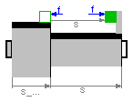
Joint where frame_b is translated along axis n which is fixed in frame_a. The two frames coincide when "s + s_offset = 0", where "s_offset" is a parameter with a zero default and "s" is the relative distance.
The prismatic joint has two additional 1-dimensional mechanical flanges (flange "axis" represents the driving flange and flange "bearing" represents the bearing) where it can be driven with elements of the Modelica.Mechanics.Translational library.
In the "Advanced" menu it can be defined via parameter enforceStates that the relative distance "s" and its derivative shall be definitely used as states (this means that the Modelica attributes stateSelect=StateSelect.always are set on these variables). The states are usually selected automatically. In certain situations, especially when closed kinematic loops are present, it might be slightly more efficient, when using the "enforceStates" setting.
| Name | Default | Description |
|---|---|---|
| animation | true | = true, if animation shall be enabled |
| n | {1,0,0} | Axis of translation resolved in frame_a (= same as in frame_b) |
| s_offset | 0 | Relative distance offset (distance between frame_a and frame_b = s_offset + s) [m] |
| initType | Types.Init.Free | Type of initialization (defines usage of start values below) |
| s_start | 0 | Initial value of distance (fixed or guess value) [m] |
| v_start | 0 | Initial value of relative velocity v = der(s) [m/s] |
| a_start | 0 | Initial value of relative acceleration a = der(v) [m/s2] |
| boxWidthDirection | {0,1,0} | Vector in width direction of box, resolved in frame_a |
| boxWidth | world.defaultJointWidth | Width of prismatic joint box [m] |
| boxHeight | boxWidth | Height of prismatic joint box [m] |
| boxColor | Types.Defaults.JointColor | Color of prismatic joint box |
| enforceStates | false | = true, if generalized variables (s,v) shall be used as states |
| f | axis.f | Actuation force in direction of joint axis [N] |
model ActuatedPrismatic "Actuated prismatic joint (1 translational degree-of-freedom, 2 potential states)" extends Internal.Prismatic(f=axis.f); Modelica.Mechanics.Translational.Interfaces.Flange_a axis; Modelica.Mechanics.Translational.Interfaces.Flange_b bearing; equation axis.s = s; bearing.s = 0; end ActuatedPrismatic;
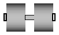
Joint where frame_b rotates around axis n which is fixed in frame_a. The two frames coincide when "phi + phi_offset = 0", where "phi_offset" is a parameter with a zero default and "phi" is the rotation angle.
In the "Advanced" menu it can be defined via parameter enforceStates that the rotation angle "phi" and its derivative shall be definitely used as states (this means that the Modelica attributes stateSelect=StateSelect.always are set on these variables). The states are usually selected automatically. In certain situations, especially when closed kinematic loops are present, it might be slightly more efficient, when using the "enforceStates" setting.
If a planar loop is present, e.g., consisting of 4 revolute joints where the joint axes are all parallel to each other, then there is no longer a unique mathematical solution and the symbolic algorithms will fail. Usually, an error message will be printed pointing out this situation. In this case, parameter planarCutJoint in the "Advanced" menu of one of the revolute joints has to be set to true. The effect is that from the 5 constraints of a usual revolute joint, 3 constraints are removed and replaced by appropriate known variables (e.g., the force in the direction of the axis of rotation is treated as known with value equal to zero; for standard revolute joints, this force is an unknown quantity).
| Name | Default | Description |
|---|---|---|
| animation | true | = true, if animation shall be enabled (show axis as cylinder) |
| n | {0,0,1} | Axis of rotation resolved in frame_a (= same as in frame_b) |
| phi_offset | 0 | Relative angle offset (angle = phi + from_deg(phi_offset)) [deg] |
| initType | Types.Init.Free | Type of initialization (defines usage of start values below) |
| phi_start | 0 | Initial value of rotation angle phi (fixed or guess value) [deg] |
| w_start | 0 | Initial value of relative angular velocity w = der(phi) [deg/s] |
| a_start | 0 | Initial value of relative angular acceleration a = der(w) [deg/s2] |
| cylinderLength | world.defaultJointLength | Length of cylinder representing the joint axis [m] |
| cylinderDiameter | world.defaultJointWidth | Diameter of cylinder representing the joint axis [m] |
| cylinderColor | Types.Defaults.JointColor | Color of cylinder representing the joint axis |
| enforceStates | false | = true, if generalized variables (phi,w) shall be used as states |
| planarCutJoint | false | = true, if joint shall be used as cut-joint in a planar loop |
model Revolute "Revolute joint (1 rotational degree-of-freedom, 2 potential states)" extends Internal.Revolute; end Revolute;
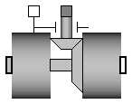
Joint where frame_b rotates around axis n which is fixed in frame_a. The two frames coincide when "phi + phi_offset = 0", where "phi_offset" is a parameter with a zero default and "phi" is the rotation angle.
The revolute joint has two additional 1-dimensional mechanical flanges (flange "axis" represents the driving flange and flange "bearing" represents the bearing) where it can be driven with elements of the Modelica.Mechanics.Rotational library.
In the "Advanced" menu it can be defined via parameter enforceStates that the rotation angle "phi" and its derivative shall be definitely used as states (this means that the Modelica attributes stateSelect=StateSelect.always are set on these variables). The states are usually selected automatically. In certain situations, especially when closed kinematic loops are present, it might be slightly more efficient, when using the "enforceStates" setting.
If a planar loop is present, e.g., consisting of 4 revolute joints where the joint axes are all parallel to each other, then there is no longer a unique mathematical solution and the symbolic algorithms will fail. Usually, an error message will be printed pointing out this situation. In this case, parameter planarCutJoint in the "Advanced" menu of one of the revolute joints has to be set to true. The effect is that from the 5 constraints of a usual revolute joint, 3 constraints are removed and replaced by appropriate known variables (e.g., the force in the direction of the axis of rotation is treated as known with value equal to zero; for standard revolute joints, this force is an unknown quantity).
| Name | Default | Description |
|---|---|---|
| animation | true | = true, if animation shall be enabled (show axis as cylinder) |
| n | {0,0,1} | Axis of rotation resolved in frame_a (= same as in frame_b) |
| phi_offset | 0 | Relative angle offset (angle = phi + from_deg(phi_offset)) [deg] |
| initType | Types.Init.Free | Type of initialization (defines usage of start values below) |
| phi_start | 0 | Initial value of rotation angle phi (fixed or guess value) [deg] |
| w_start | 0 | Initial value of relative angular velocity w = der(phi) [deg/s] |
| a_start | 0 | Initial value of relative angular acceleration a = der(w) [deg/s2] |
| cylinderLength | world.defaultJointLength | Length of cylinder representing the joint axis [m] |
| cylinderDiameter | world.defaultJointWidth | Diameter of cylinder representing the joint axis [m] |
| cylinderColor | Types.Defaults.JointColor | Color of cylinder representing the joint axis |
| enforceStates | false | = true, if generalized variables (phi,w) shall be used as states |
| planarCutJoint | false | = true, if joint shall be used as cut-joint in a planar loop |
| tau | axis.tau | Driving torque in direction of axis of rotation [N.m] |
model ActuatedRevolute "Actuated revolute joint (1 rotational degree-of-freedom, 2 potential states)" extends Internal.Revolute(tau=axis.tau); Modelica.Mechanics.Rotational.Interfaces.Flange_a axis; Modelica.Mechanics.Rotational.Interfaces.Flange_b bearing; equation axis.phi = phi; bearing.phi = 0; end ActuatedRevolute;
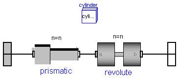
Joint where frame_b rotates around and translates along axis n which is fixed in frame_a. The two frames coincide when "revolute.phi=0" and "prismatic.s=0". This joint has the following potential states;
They are used as candidates for automatic selection of states from the tool. This may be enforced by setting "enforceStates=true" in the Advanced menu (this means that the Modelica attributes stateSelect=StateSelect.always are set on these variables). The states are usually selected automatically. In certain situations, especially when closed kinematic loops are present, it might be slightly more efficient, when using the "enforceStates" setting.
This joint is visualized as cylinder along axis n from the origin of frame_a to the origin of frame_b.
| Name | Default | Description |
|---|---|---|
| animation | true | = true, if animation shall be enabled (show cylinder) |
| n | {1,0,0} | Cylinder axis resolved in frame_a (= same as in frame_b) |
| initType | Types.Init.Free | Type of initialization (defines usage of start values below) |
| phi_start | 0 | Initial value of rotation angle phi (fixed or guess value) [deg] |
| s_start | 0 | Initial value of relative distance (fixed or guess value) [m] |
| w_start | 0 | Initial value of relative angular velocity w = der(phi) [deg/s] |
| v_start | 0 | Initial value of relative velocity v = der(s) [m/s] |
| a_start | 0 | Initial value of relative acceleration a = der(v) [m/s2] |
| wd_start | 0 | Initial value of relative angular acceleration wd = der(w) [deg/s2] |
| cylinderDiameter | world.defaultJointWidth | Diameter of cylinder [m] |
| cylinderColor | Types.Defaults.JointColor | Color of cylinder |
| enforceStates | false | = true, if generalized variables shall be used as states |
model Cylindrical
"Cylindrical joint (2 degrees-of-freedom, 4 potential states)"
import SI = Modelica.SIunits;
import NonSI = Modelica.SIunits.Conversions.NonSIunits;
extends MultiBody.Interfaces.PartialTwoFrames;
parameter Boolean animation=true
"= true, if animation shall be enabled (show cylinder)";
parameter MultiBody.Types.Axis n={1,0,0}
"Cylinder axis resolved in frame_a (= same as in frame_b)";
parameter Types.Init.Temp initType=Types.Init.Free
"|Initialization| Type of initialization (defines usage of start values below)";
parameter NonSI.Angle_deg phi_start=0
"|Initialization| Initial value of rotation angle phi (fixed or guess value)";
parameter SI.Position s_start=0
"|Initialization| Initial value of relative distance (fixed or guess value)";
parameter MultiBody.Types.AngularVelocity_degs w_start=0
"|Initialization| Initial value of relative angular velocity w = der(phi)";
parameter SI.Velocity v_start=0
"|Initialization| Initial value of relative velocity v = der(s)";
parameter SI.Acceleration a_start=0
"|Initialization| Initial value of relative acceleration a = der(v)";
parameter MultiBody.Types.AngularAcceleration_degs2 wd_start=0
"|Initialization| Initial value of relative angular acceleration wd = der(w)";
parameter SI.Distance cylinderDiameter=world.defaultJointWidth
"|Animation|if animation = true| Diameter of cylinder";
parameter MultiBody.Types.Color cylinderColor=Types.Defaults.JointColor
"|Animation|if animation = true| Color of cylinder";
parameter Boolean enforceStates=false
"|Advanced|| = true, if generalized variables shall be used as states";
Prismatic prismatic(
n=n,
animation=false,
enforceStates=enforceStates,
initType=initType,
s_start=s_start,
v_start=v_start,
a_start=a_start);
Revolute revolute(
n=n,
animation=false,
enforceStates=enforceStates,
initType=initType,
phi_start=phi_start,
w_start=w_start,
a_start=wd_start);
protected
parameter Integer ndim=if world.enableAnimation and animation then 1 else 0;
protected
Visualizers.Advanced.Shape cylinder[ndim](
each shapeType="cylinder",
each color=cylinderColor,
each length=prismatic.s,
each width=cylinderDiameter,
each height=cylinderDiameter,
each lengthDirection=prismatic.e,
each widthDirection={0,1,0},
each r=frame_a.r_0,
each R=frame_a.R);
equation
connect(frame_a, prismatic.frame_a);
connect(prismatic.frame_b, revolute.frame_a);
connect(revolute.frame_b, frame_b);
end Cylindrical;

Joint where frame_a rotates around axis n_a which is fixed in frame_a and frame_b rotates around axis n_b which is fixed in frame_b. The two frames coincide when "revolute_a.phi=0" and "revolute_b.phi=0". This joint has the following potential states;
They are used as candidates for automatic selection of states from the tool. This may be enforced by setting "enforceStates=true" in the Advanced menu (this means that the Modelica attributes stateSelect=StateSelect.always are set on these variables). The states are usually selected automatically. In certain situations, especially when closed kinematic loops are present, it might be slightly more efficient, when using the "enforceStates" setting.
This joint is visualized with a cylinder along axis n_a and with a cylinder along axis n_b.
| Name | Default | Description |
|---|---|---|
| animation | true | = true, if animation shall be enabled |
| n_a | {1,0,0} | Axis of revolute joint 1 resolved in frame_a |
| n_b | {0,1,0} | Axis of revolute joint 2 resolved in frame_b |
| initType | Types.Init.Free | Type of initialization (defines usage of start values below) |
| phi_start_a | 0 | Initial value of rotation angle at frame_a (fixed or guess value) [deg] |
| phi_start_b | 0 | Initial value of rotation angle at frame_b (fixed or guess value) [deg] |
| w_start_a | 0 | Initial value of derivative of rotation angle at frame_a [deg/s] |
| w_start_b | 0 | Initial value of derivative of rotation angle at frame_b [deg/s] |
| a_start_a | 0 | Initial value of second derivative of rotation angle at frame_a [deg/s2] |
| a_start_b | 0 | Initial value of second derivative of rotation angle at frame_b [deg/s2] |
| cylinderLength | world.defaultJointLength | Length of cylinders representing the joint axes [m] |
| cylinderDiameter | world.defaultJointWidth | Diameter of cylinders representing the joint axes [m] |
| cylinderColor | Types.Defaults.JointColor | Color of cylinders representing the joint axes |
| enforceStates | false | = true, if generalized variables shall be used as states |
model Universal
"Universal joint (2 degrees-of-freedom, 4 potential states)"
import SI = Modelica.SIunits;
import NonSI = Modelica.SIunits.Conversions.NonSIunits;
extends MultiBody.Interfaces.PartialTwoFrames;
parameter Boolean animation=true "= true, if animation shall be enabled";
parameter MultiBody.Types.Axis n_a={1,0,0}
"Axis of revolute joint 1 resolved in frame_a";
parameter MultiBody.Types.Axis n_b={0,1,0}
"Axis of revolute joint 2 resolved in frame_b";
parameter Types.Init.Temp initType=Types.Init.Free
"|Initialization| Type of initialization (defines usage of start values below)";
parameter NonSI.Angle_deg phi_start_a=0
"|Initialization| Initial value of rotation angle at frame_a (fixed or guess value)";
parameter NonSI.Angle_deg phi_start_b=0
"|Initialization| Initial value of rotation angle at frame_b (fixed or guess value)";
parameter MultiBody.Types.AngularVelocity_degs w_start_a=0
"|Initialization| Initial value of derivative of rotation angle at frame_a";
parameter MultiBody.Types.AngularVelocity_degs w_start_b=0
"|Initialization| Initial value of derivative of rotation angle at frame_b";
parameter MultiBody.Types.AngularAcceleration_degs2 a_start_a=0
"|Initialization| Initial value of second derivative of rotation angle at frame_a";
parameter MultiBody.Types.AngularAcceleration_degs2 a_start_b=0
"|Initialization| Initial value of second derivative of rotation angle at frame_b";
parameter SI.Distance cylinderLength=world.defaultJointLength
"|Animation|if animation = true| Length of cylinders representing the joint axes";
parameter SI.Distance cylinderDiameter=world.defaultJointWidth
"|Animation|if animation = true| Diameter of cylinders representing the joint axes";
parameter MultiBody.Types.Color cylinderColor=Types.Defaults.JointColor
"|Animation|if animation = true| Color of cylinders representing the joint axes";
parameter Boolean enforceStates=false
"|Advanced|| = true, if generalized variables shall be used as states";
MultiBody.Joints.Revolute revolute_a(
n=n_a,
enforceStates=enforceStates,
initType=initType,
phi_start=phi_start_a,
w_start=w_start_a,
a_start=a_start_a,
cylinderDiameter=cylinderDiameter,
cylinderLength=cylinderLength,
cylinderColor=cylinderColor,
animation=animation);
MultiBody.Joints.Revolute revolute_b(
n=n_b,
enforceStates=enforceStates,
initType=initType,
phi_start=phi_start_b,
w_start=w_start_b,
a_start=a_start_b,
animation=animation,
cylinderDiameter=cylinderDiameter,
cylinderLength=cylinderLength,
cylinderColor=cylinderColor);
equation
connect(frame_a, revolute_a.frame_a);
connect(revolute_b.frame_b, frame_b);
connect(revolute_a.frame_b, revolute_b.frame_a);
end Universal;
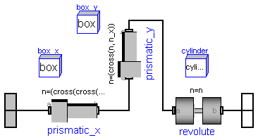
Joint where frame_b can move in a plane and can rotate around an axis orthogonal to the plane. The plane is defined by vector n which is perpendicular to the plane and by vector n_x, which points in the direction of the x-axis of the plane. frame_a and frame_b coincide when prismatic_a.s=0, prismatic_b=0 and revolute.phi=0. This joint has the following potential states:
The potential states are used as candidates for automatic selection of states from the tool. This may be enforced by setting "enforceStates=true" in the Advanced menu (this means that the Modelica attributes stateSelect=StateSelect.always are set on these variables). The states are usually selected automatically. In certain situations, especially when closed kinematic loops are present, it might be slightly more efficient, when using the "enforceStates" setting.
This joint is visualized with a box along axis n_x, a box along axis n_y and a cylinder along axis n.
| Name | Default | Description |
|---|---|---|
| animation | true | = true, if animation shall be enabled |
| n | {0,0,1} | Axis orthogonal to unconstrained plane, resolved in frame_a (= same as in frame_b) |
| n_x | {1,0,0} | Vector in direction of x-axis of plane, resolved in frame_a (n_x shall be orthogonal to n) |
| initType | Types.Init.Free | Type of initialization (defines usage of start values below) |
| s_start_x | 0 | Initial value of x-distance (along n_x; fixed or guess value) [m] |
| s_start_y | 0 | Initial value of y-distance (along cross(n,n_x); fixed or guess value) [m] |
| phi_start | 0 | Initial value of rotation angle along n (fixed or guess value) [deg] |
| v_start_x | 0 | Initial value of derivative of x-distance [m/s] |
| v_start_y | 0 | Initial value of derivative of y-distance [m/s] |
| w_start | 0 | Initial value of derivative of rotation angle [deg/s] |
| a_start_x | 0 | Initial value of second derivative of x-distance [m/s2] |
| a_start_y | 0 | Initial value of second derivative of y-distance [m/s2] |
| wd_start | 0 | Initial value of second derivative of rotation angle [deg/s2] |
| cylinderLength | world.defaultJointLength | Length of revolute cylinder [m] |
| cylinderDiameter | world.defaultJointWidth | Diameter of revolute cylinder [m] |
| cylinderColor | Types.Defaults.JointColor | Color of revolute cylinder |
| boxWidth | 0.3*cylinderDiameter | Width of prismatic joint boxes |
| boxHeight | boxWidth | Height of prismatic joint boxes |
| boxColor | Types.Defaults.JointColor | Color of prismatic joint boxes |
| enforceStates | false | = true, if generalized variables (s,phi,v,w) shall be used as states |
model Planar
"Planar joint (3 degrees-of-freedom, 6 potential states)"
import NonSI = Modelica.SIunits.Conversions.NonSIunits;
extends MultiBody.Interfaces.PartialTwoFrames;
parameter Boolean animation=true "= true, if animation shall be enabled";
parameter MultiBody.Types.Axis n={0,0,1}
"Axis orthogonal to unconstrained plane, resolved in frame_a (= same as in frame_b)";
parameter MultiBody.Types.Axis n_x={1,0,0}
"Vector in direction of x-axis of plane, resolved in frame_a (n_x shall be orthogonal to n)";
parameter Types.Init.Temp initType=Types.Init.Free
"|Initialization| Type of initialization (defines usage of start values below)";
parameter SI.Position s_start_x=0
"|Initialization| Initial value of x-distance (along n_x; fixed or guess value)";
parameter SI.Position s_start_y=0
"|Initialization| Initial value of y-distance (along cross(n,n_x); fixed or guess value)";
parameter NonSI.Angle_deg phi_start=0
"|Initialization| Initial value of rotation angle along n (fixed or guess value)";
parameter SI.Velocity v_start_x=0
"|Initialization| Initial value of derivative of x-distance";
parameter SI.Velocity v_start_y=0
"|Initialization| Initial value of derivative of y-distance";
parameter MultiBody.Types.AngularVelocity_degs w_start=0
"|Initialization| Initial value of derivative of rotation angle";
parameter SI.Acceleration a_start_x=0
"|Initialization| Initial value of second derivative of x-distance";
parameter SI.Acceleration a_start_y=0
"|Initialization| Initial value of second derivative of y-distance";
parameter MultiBody.Types.AngularAcceleration_degs2 wd_start=0
"|Initialization| Initial value of second derivative of rotation angle";
parameter SI.Distance cylinderLength=world.defaultJointLength
"|Animation|if animation = true| Length of revolute cylinder";
parameter SI.Distance cylinderDiameter=world.defaultJointWidth
"|Animation|if animation = true| Diameter of revolute cylinder";
parameter MultiBody.Types.Color cylinderColor=Types.Defaults.JointColor
"|Animation|if animation = true| Color of revolute cylinder";
parameter Real boxWidth=0.3*cylinderDiameter
"|Animation|if animation = true| Width of prismatic joint boxes";
parameter Real boxHeight=boxWidth
"|Animation|if animation = true| Height of prismatic joint boxes";
parameter MultiBody.Types.Color boxColor=Types.Defaults.JointColor
"|Animation|if animation = true| Color of prismatic joint boxes";
parameter Boolean enforceStates=false
"|Advanced|| = true, if generalized variables (s,phi,v,w) shall be used as states";
Prismatic prismatic_x(
enforceStates=enforceStates,
n=(cross(cross(n, n_x), n)),
animation=false,
initType=initType,
s_start=s_start_x,
v_start=v_start_x,
a_start=a_start_x);
Prismatic prismatic_y(
enforceStates=enforceStates,
n=(cross(n, n_x)),
animation=false,
initType=initType,
s_start=s_start_y,
v_start=v_start_y,
a_start=a_start_y);
Revolute revolute(
enforceStates=enforceStates,
n=n,
animation=false,
initType=initType,
phi_start=phi_start,
w_start=w_start,
a_start=wd_start);
protected
parameter Integer ndim=if world.enableAnimation and animation then 1 else 0;
parameter Real e[3]=Frames.normalize(n);
protected
Visualizers.Advanced.Shape box_x[ndim](
each shapeType="box",
each color=boxColor,
each length=prismatic_x.s,
each width=boxWidth,
each height=boxWidth,
each lengthDirection=prismatic_x.e,
each widthDirection={0,1,0},
each r=frame_a.r_0,
each R=frame_a.R);
Visualizers.Advanced.Shape box_y[ndim](
each shapeType="box",
each color=boxColor,
each length=prismatic_y.s,
each width=boxWidth,
each height=boxWidth,
each lengthDirection=prismatic_y.e,
each widthDirection={1,0,0},
each r=prismatic_y.frame_a.r_0,
each R=prismatic_y.frame_a.R);
Visualizers.Advanced.Shape cylinder[ndim](
each shapeType="cylinder",
each color=cylinderColor,
each length=cylinderLength,
each width=cylinderDiameter,
each height=cylinderDiameter,
each lengthDirection=n,
each widthDirection={0,1,0},
each r_shape=-e*(cylinderLength/2),
each r=revolute.frame_b.r_0,
each R=revolute.frame_b.R);
equation
connect(frame_a, prismatic_x.frame_a);
connect(prismatic_x.frame_b, prismatic_y.frame_a);
connect(prismatic_y.frame_b, revolute.frame_a);
connect(revolute.frame_b, frame_b);
end Planar;
MultiBody.Joints.Spherical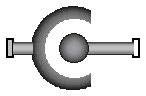
Joint with 3 constraints that define that the origin of frame_a and the origin of frame_b coincide. This joint does not have potential states.
If this joint is used in a chain structure, a Modelica translator has to select orientation coordinates of a body as states. If this joint is used in a loop structure, it is a cut-joint that breaks the loop in independent kinematic pieces, hold together by the constraints of this joint. As a result, a Modelica translator will first try to select 3 generalized coordinates in the joints of the remaining parts of the loop and their first derivative as states and if this is not possible, e.g., because there are only spherical joints in the loop, will select coordinates from a body of the loop as states.
| Name | Default | Description |
|---|---|---|
| animation | true | = true, if animation shall be enabled (show sphere) |
| sphereDiameter | world.defaultJointLength | Diameter of sphere representing the spherical joint [m] |
| sphereColor | Types.Defaults.JointColor | Color of sphere representing the spherical joint |
model Spherical
"Spherical joint (3 constraints, no potential states)"
extends MultiBody.Interfaces.PartialTwoFrames;
parameter Boolean animation=true
"= true, if animation shall be enabled (show sphere)";
parameter SI.Distance sphereDiameter=world.defaultJointLength
"|if animation = true| Diameter of sphere representing the spherical joint";
parameter MultiBody.Types.Color sphereColor=Types.Defaults.JointColor
"|if animation = true| Color of sphere representing the spherical joint";
Frames.Orientation R_rel
"Relative orientation object to rotate from frame_a to frame_b";
protected
parameter Integer ndim=if world.enableAnimation and animation then 1 else 0;
Visualizers.Advanced.Shape sphere[ndim](
each shapeType="sphere",
each color=sphereColor,
each length=sphereDiameter,
each width=sphereDiameter,
each height=sphereDiameter,
each lengthDirection={1,0,0},
each widthDirection={0,1,0},
each r_shape={-0.5,0,0}*sphereDiameter,
each r=frame_a.r_0,
each R=frame_a.R);
equation
// Constraint equation
frame_b.r_0 = frame_a.r_0;
// force balance
R_rel = Frames.relativeRotation(frame_a.R, frame_b.R);
zeros(3) = frame_a.f + Frames.resolve1(R_rel, frame_b.f);
// d'Alemberts principle + torque balance
frame_a.t = zeros(3);
frame_b.t = zeros(3);
end Spherical;
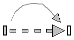
Joint which does not constrain the motion between frame_a and frame_b. Such a joint is only meaningful if the relative distance and orientation between frame_a and frame_b, and their derivatives, shall be used as states.
Note, that bodies such as Parts.Body, Parts.BodyShape, have potential states describing the distance and orientation, and their derivatives, between the world frame and a body fixed frame. Therefore, if these potential state variables are suited, a FreeMotion joint is not needed.
| Name | Default | Description |
|---|---|---|
| animation | true | = true, if animation shall be enabled (show arrow from frame_a to frame_b) |
| initType | Types.Init.Free | Type of initialization (defines usage of start values below) |
| r_rel_a_start[3] | {0,0,0} | Initial values of r_rel_a (vector from origin of frame_a to origin of frame_b resolved in frame_a) [m] |
| phi_start[3] | {0,0,0} | Initial values of angles to rotate frame_a around x-, y-, z- axis into frame_b [deg] |
| v_rel_a_start[3] | {0,0,0} | Initial values of velocity v_rel_a = der(r_rel_a) [m/s] |
| w_rel_a_start[3] | {0,0,0} | Initial values of angular velocity of frame_b with respect to frame_a resolved in frame_a [deg/s] |
| a_rel_a_start[3] | {0,0,0} | Initial values of acceleration a_rel_a = der(v_rel_a) [m/s2] |
| z_rel_a_start[3] | {0,0,0} | Initial values of angular acceleration z_rel_a = der(w_rel_a) [deg/s2] |
| arrowDiameter | world.defaultArrowDiameter | Diameter of arrow from frame_a to frame_b [m] |
| arrowColor | Types.Defaults.SensorColor | Color of arrow |
| enforceStates | true | = true, if generalized variables shall be used as states |
model FreeMotion
"Free motion joint (6 degrees-of-freedom, 12 potential states)"
import Modelica.Math.*;
import SI = Modelica.SIunits;
import Cv = Modelica.SIunits.Conversions;
extends MultiBody.Interfaces.PartialElementaryJoint;
parameter Boolean animation=true
"= true, if animation shall be enabled (show arrow from frame_a to frame_b)";
parameter Types.Init.Temp initType=Types.Init.Free
"|Initialization| Type of initialization (defines usage of start values below)";
parameter SI.Position r_rel_a_start[3]={0,0,0}
"|Initialization| Initial values of r_rel_a (vector from origin of frame_a to origin of frame_b resolved in frame_a)";
parameter Cv.NonSIunits.Angle_deg phi_start[3]={0,0,0}
"|Initialization| Initial values of angles to rotate frame_a around x-, y-, z- axis into frame_b";
parameter SI.Velocity v_rel_a_start[3]={0,0,0}
"|Initialization| Initial values of velocity v_rel_a = der(r_rel_a)";
parameter MultiBody.Types.AngularVelocity_degs w_rel_a_start[3]={0,0,0}
"|Initialization| Initial values of angular velocity of frame_b with respect to frame_a resolved in frame_a";
parameter SI.Acceleration a_rel_a_start[3]={0,0,0}
"|Initialization| Initial values of acceleration a_rel_a = der(v_rel_a)";
parameter MultiBody.Types.AngularAcceleration_degs2 z_rel_a_start[3]={0,0,0}
"|Initialization| Initial values of angular acceleration z_rel_a = der(w_rel_a)";
parameter SI.Length arrowDiameter=world.defaultArrowDiameter
"|Animation|if animation = true| Diameter of arrow from frame_a to frame_b";
parameter MultiBody.Types.Color arrowColor=Types.Defaults.SensorColor
"|Animation|if animation = true| Color of arrow";
parameter Boolean enforceStates=true
"|Advanced|| = true, if generalized variables shall be used as states";
SI.Position r_rel_a[3](start=r_rel_a_start, stateSelect=if enforceStates
then StateSelect.always else StateSelect.prefer)
"Position vector from origin of frame_a to origin of frame_b, resolved in frame_a";
SI.Velocity v_rel_a[3](stateSelect=if enforceStates then StateSelect.always
else StateSelect.prefer)
"= der(r_rel_a), i.e., velocity of origin of frame_b with respect to origin of frame_a, resolved in frame_a";
SI.Angle phi[3](start=Cv.from_deg(phi_start), stateSelect=if enforceStates
then StateSelect.always else StateSelect.prefer)
"Angles to rotate frame_a around x-, y-, z-axis into frame_b";
SI.AngularVelocity w_rel_a[3](stateSelect=if enforceStates then StateSelect.
always else StateSelect.prefer)
"Angular velocity of frame_b with respect to frame_a, resolved in frame_a: w_rel_a = vec( der(T_rel)'*T_rel )";
SI.Acceleration a_rel_a[3] "= der(v_rel_a)";
SI.AngularAcceleration z_rel_a[3] "= der(w_rel_a)";
protected
constant Real c2_small=1.e-6
"If cos(phi[2]) < c2_small, c2_small is used as guard against zero division";
Real s1 "= sin(phi[1])";
Real s2 "= sin(phi[2])";
Real s3 "= sin(phi[3])";
Real c1 "= cos(phi[1])";
Real c2 "= cos(phi[2])";
Real c2a "= cos(phi[2]) with guard against zero";
Real c3 "= cos(phi[3])";
protected
parameter Integer ndim=if world.enableAnimation and animation then 1 else 0;
Visualizers.Advanced.Arrow arrow[ndim](
each r_head=r_rel_a,
each diameter=arrowDiameter,
each color=arrowColor,
each r=frame_a.r_0,
each R=frame_a.R);
Frames.Orientation R_rel;
Real T_rel[3, 3];
initial equation
if initType == Types.Init.Position or initType == Types.Init.PositionVelocity
or initType == Types.Init.PositionVelocityAcceleration then
// Initialize positional variables
r_rel_a = r_rel_a_start;
phi = Cv.from_deg(phi_start);
end if;
if initType == Types.Init.PositionVelocity or initType == Types.Init.
PositionVelocityAcceleration or initType == Types.Init.Velocity or
initType == Types.Init.VelocityAcceleration then
// Initialize velocity variables
v_rel_a = v_rel_a_start;
w_rel_a = w_rel_a_start*Modelica.Constants.D2R;
end if;
if initType == Types.Init.VelocityAcceleration or initType == Types.Init.
PositionVelocityAcceleration then
// Initialize acceleration variables
a_rel_a = a_rel_a_start;
z_rel_a = z_rel_a_start*Modelica.Constants.D2R;
end if;
if initType == Types.Init.SteadyState then
v_rel_a = zeros(3);
w_rel_a = zeros(3);
a_rel_a = zeros(3);
z_rel_a = zeros(3);
end if;
/* Determine sines and cosines of the Cardan angles */
equation
s1 = sin(phi[1]);
s2 = sin(phi[2]);
s3 = sin(phi[3]);
c1 = cos(phi[1]);
c2 = cos(phi[2]);
c3 = cos(phi[3]);
/* Below, an expression is divided by c2. When phi[2] = 90 deg, c2=0 and
a zero division occurs. To avoid this, c2 is set to a small value around
this singular point with the hope that the simulation will still work even if
there is a small jump in c2.
*/
c2a = noEvent(if c2 > c2_small or c2 < -c2_small then c2 else (if c2 >= 0
then c2_small else -c2_small));
/* Relative transformation matrix from frame_a to frame_b
T_rel = [ c3, s3, 0;
-s3, c3, 0;
0, 0, 1]*[c2, 0, -s2;
0, 1, 0;
s2, 0, c2]*[1, 0, 0;
0, c1, s1;
0, -s1, c1];
*/
T_rel = [c2*c3, c1*s3 + s1*s2*c3, s1*s3 - c1*s2*c3; -c2*s3, c1*c3 - s1*s2*s3,
s1*c3 + c1*s2*s3; s2, -s1*c2, c1*c2];
R_rel = Frames.from_T(T_rel);
// Kinematic differential equations for translational motion
der(r_rel_a) = v_rel_a;
der(v_rel_a) = a_rel_a;
// Kinematic differential equations for rotational motion
der(phi) = {w_rel_a[1] + (s1*w_rel_a[2] - c1*w_rel_a[3])*s2/c2a,c1*w_rel_a[2]
+ s1*w_rel_a[3],(-s1*w_rel_a[2] + c1*w_rel_a[3])/c2a};
der(w_rel_a) = z_rel_a;
// Kinematic relationships
frame_b.R = Frames.absoluteRotation(frame_a.R, R_rel);
frame_b.r_0 = frame_a.r_0 + Frames.resolve1(frame_a.R, r_rel_a);
// Cut-forces and cut-torques are zero
frame_a.f = zeros(3);
frame_a.t = zeros(3);
frame_b.f = zeros(3);
frame_b.t = zeros(3);
end FreeMotion;
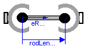
Joint that has a spherical joint on each of its two ends. The rod connecting the two spherical joints is approximated by a point mass that is located in the middle of the rod. When the mass is set to zero (default), special code for a massless body is generated. In the following default animation figure, the two spherical joints are represented by two red spheres, the connecting rod by a grey cylinder and the point mass in the middle of the rod by a light blue sphere:
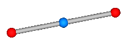
This joint introduces one constraint defining that the distance between the origin of frame_a and the origin of frame_b is constant (= rodLength). It is highly recommended to use this joint in loops whenever possible, because this enhances the efficiency considerably due to smaller systems of non-linear algebraic equations.It is sometimes desirable to compute the rodLength of the connecting rod during initialization. For this, parameter computeLength has to be set to true and instead one other, easier to determine, position variable in the same loop needs to have a fixed attribute of true. For example, if a loop consists of one Revolute joint, one Prismatic joint and a SphericalSpherical joint, one may fix the start values of the revolute joint angle and of the relative distance of the prismatic joint in order to compute the rodLength of the rod.
It is not possible to connect other components, such as a body with mass properties or a special visual shape object to the rod connecting the two spherical joints. If this is needed, use instead joint Joints.UniversalSpherical that has this property.
| Name | Default | Description |
|---|---|---|
| animation | true | = true, if animation shall be enabled |
| showMass | true | = true, if mass shall be shown (provided animation = true and m > 0) |
| computeRodLength | false | = true, if rodLength shall be computed during initialization (see info) |
| rodLength | 1 | Distance between the origins of frame_a and frame_b (if computeRodLength=true, guess value) [m] |
| m | 0 | Mass of rod (= point mass located in middle of rod) [kg] |
| sphereDiameter | world.defaultJointLength | Diameter of spheres respresenting the spherical joints |
| sphereColor | MultiBody.Types.Defaults.JointColor | Color of spheres respresenting the spherical joints |
| rodDiameter | sphereDiameter/MultiBody.Types.Defaults.JointRodDiameterFraction | Diameter of rod connecting the two spherical joint |
| rodColor | MultiBody.Types.Defaults.RodColor | Color of rod connecting the two spherical joints |
| massDiameter | sphereDiameter | Diameter of sphere representing the mass point |
| massColor | MultiBody.Types.Defaults.BodyColor | Color of sphere representing the mass point |
| kinematicConstraint | true | = false, if no constraint shall be defined, due to analytically solving a kinematic loop |
| checkTotalPower | false | = true, if total power flowing into this component shall be determined (must be zero) |
model SphericalSpherical
"Spherical - spherical joint aggregation (1 constraint, no potential states) with an optional point mass in the middle"
import SI = Modelica.SIunits;
extends Interfaces.PartialTwoFrames;
parameter Boolean animation=true "= true, if animation shall be enabled";
parameter Boolean showMass=true
"= true, if mass shall be shown (provided animation = true and m > 0)";
parameter Boolean computeRodLength=false
"= true, if rodLength shall be computed during initialization (see info)";
parameter SI.Length rodLength(
min=Modelica.Constants.eps,
fixed=not computeRodLength) = 1
"Distance between the origins of frame_a and frame_b (if computeRodLength=true, guess value)";
parameter SI.Mass m=0 "Mass of rod (= point mass located in middle of rod)";
parameter Real sphereDiameter=world.defaultJointLength
"|Animation|if animation = true| Diameter of spheres respresenting the spherical joints";
parameter MultiBody.Types.Color sphereColor=MultiBody.Types.Defaults.JointColor
"|Animation|if animation = true| Color of spheres respresenting the spherical joints";
parameter Real rodDiameter=sphereDiameter/MultiBody.Types.Defaults.
JointRodDiameterFraction
"|Animation|if animation = true| Diameter of rod connecting the two spherical joint";
parameter MultiBody.Types.Color rodColor=MultiBody.Types.Defaults.RodColor
"|Animation|if animation = true| Color of rod connecting the two spherical joints";
parameter Real massDiameter=sphereDiameter
"|Animation|if animation = true and showMass = true and m > 0| Diameter of sphere representing the mass point";
parameter MultiBody.Types.Color massColor=MultiBody.Types.Defaults.BodyColor
"|Animation|if animation = true and showMass = true and m > 0| Color of sphere representing the mass point";
parameter Boolean kinematicConstraint=true
"|Advanced|| = false, if no constraint shall be defined, due to analytically solving a kinematic loop";
parameter Boolean checkTotalPower=false
"|Advanced|| = true, if total power flowing into this component shall be determined (must be zero)";
Frames.Orientation R_rel
"Relative orientation object to rotate from frame_a to frame_b";
SI.Force f_rod
"Constraint force in direction of the rod (positive on frame_a, when directed from frame_a to frame_b)";
SI.Position rRod_0[3]
"Position vector from frame_a to frame_b resolved in world frame";
SI.Position rRod_a[3]
"Position vector from frame_a to frame_b resolved in frame_a";
SI.Position eRod_a[3]
"Unit vector in direction from frame_a to frame_b, resolved in frame_a";
SI.Position r_CM_0[3]
"Dummy if m==0, or position vector from world frame to mid-point of rod, resolved in world frame";
SI.Velocity v_CM_0[3] "First derivative of r_CM_0";
SI.Force f_CM_a[3]
"Dummy if m==0, or inertial force acting at mid-point of rod due to mass oint acceleration, resolved in frame_a";
SI.Force f_CM_e[3]
"Dummy if m==0, or projection of f_CM_a onto eRod_a, resolved in frame_a";
SI.Force f_b_a1[3]
"Force acting at frame_b, but without force in rod, resolved in frame_a";
SI.Power totalPower
"Total power flowing into this element, if checkTotalPower=true (otherwise dummy)";
protected
parameter Integer ndim=if world.enableAnimation and animation then 1 else 0;
parameter Integer ndim2=if world.enableAnimation and animation and showMass
and m > 0 then 1 else 0;
Visualizers.Advanced.Shape shape_rod[ndim](
each shapeType="cylinder",
each color=rodColor,
each length=rodLength,
each width=rodDiameter,
each height=rodDiameter,
each lengthDirection=eRod_a,
each widthDirection={0,1,0},
each r=frame_a.r_0,
each R=frame_a.R);
Visualizers.Advanced.Shape shape_a[ndim](
each shapeType="sphere",
each color=sphereColor,
each length=sphereDiameter,
each width=sphereDiameter,
each height=sphereDiameter,
each lengthDirection=eRod_a,
each widthDirection={0,1,0},
each r_shape=-eRod_a*(sphereDiameter/2),
each r=frame_a.r_0,
each R=frame_a.R);
Visualizers.Advanced.Shape shape_b[ndim](
each shapeType="sphere",
each color=sphereColor,
each length=sphereDiameter,
each width=sphereDiameter,
each height=sphereDiameter,
each lengthDirection=eRod_a,
each widthDirection={0,1,0},
each r_shape=eRod_a*(rodLength - sphereDiameter/2),
each r=frame_a.r_0,
each R=frame_a.R);
Visualizers.Advanced.Shape shape_mass[ndim2](
each shapeType="sphere",
each color=massColor,
each length=massDiameter,
each width=massDiameter,
each height=massDiameter,
each lengthDirection=eRod_a,
each widthDirection={0,1,0},
each r_shape=eRod_a*(rodLength/2 - sphereDiameter/2),
each r=frame_a.r_0,
each R=frame_a.R);
equation
// Determine relative position vector between the two frames
rRod_0 = frame_b.r_0 - frame_a.r_0;
rRod_a = Frames.resolve2(frame_a.R, rRod_0);
eRod_a = rRod_a/rodLength;
/* Constraint equation is removed, when taken into account somewhere else,
e.g., when analytically solving a kinematic loop
*/
if kinematicConstraint then
0 = rRod_0*rRod_0 - rodLength*rodLength;
end if;
// Cut-torques at frame_a and frame_b
frame_a.t = zeros(3);
frame_b.t = zeros(3);
/* Force and torque balance of rod
- Kinematics for center of mass CM of mass point
r_CM_0 = frame_a.r_0 + rRod_0/2;
v_CM_0 = der(r_CM_0);
a_CM_a = resolve2(frame_a.R, der(v_CM_0) - world.gravityAcceleration(r_CM_0));
- Inertial and gravity force in direction (f_CM_e) and orthogonal (f_CM_n) to rod
f_CM_a = m*a_CM_a
f_CM_e = f_CM_a*eRod_a; // in direction of rod
f_CM_n = rodLength(f_CM_a - f_CM_e); // orthogonal to rod
- Force balance in direction of rod
f_CM_e = fa_rod_e + fb_rod_e;
- Force balance orthogonal to rod
f_CM_n = fa_rod_n + fb_rod_n;
- Torque balance with respect to frame_a
0 = (-f_CM_n)*rodLength/2 + fb_rod_n*rodLength
The result is:
fb_rod_n = f_CM_n/2;
fa_rod_n = fb_rod_n;
fb_rod_e = f_CM_e - fa_rod_e;
fa_rod_e is the unknown computed from loop
*/
// f_b_a1 is needed in aggregation joints to solve kinematic loops analytically
R_rel = Frames.relativeRotation(frame_a.R, frame_b.R);
if m > 0 then
r_CM_0 = frame_a.r_0 + rRod_0/2;
v_CM_0 = der(r_CM_0);
f_CM_a = m*Frames.resolve2(frame_a.R, der(v_CM_0) -
world.gravityAcceleration(r_CM_0));
f_CM_e = (f_CM_a*eRod_a)*eRod_a;
frame_a.f = (f_CM_a - f_CM_e)/2 + f_rod*eRod_a;
f_b_a1 = (f_CM_a + f_CM_e)/2;
frame_b.f = Frames.resolve2(R_rel, f_b_a1 - f_rod*eRod_a);
else
r_CM_0 = zeros(3);
v_CM_0 = zeros(3);
f_CM_a = zeros(3);
f_CM_e = zeros(3);
f_b_a1 = zeros(3);
frame_a.f = f_rod*eRod_a;
frame_b.f = -Frames.resolve2(R_rel, frame_a.f);
end if;
if checkTotalPower then
totalPower = frame_a.f*Frames.resolve2(frame_a.R, der(frame_a.r_0)) +
frame_b.f*Frames.resolve2(frame_b.R, der(frame_b.r_0)) + (-m)*(der(v_CM_0)
- world.gravityAcceleration(r_CM_0))*v_CM_0 + frame_a.t*
Frames.angularVelocity2(frame_a.R, der(frame_a.R)) + frame_b.t*
Frames.angularVelocity2(frame_b.R, der(frame_b.R));
else
totalPower = 0;
end if;
end SphericalSpherical;
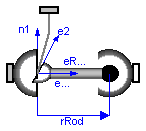
This component consists of a universal joint at frame_a and a spherical joint at frame_b that are connected together with a rigid rod, see default aimation figure (the arrows are not part of the default animation):
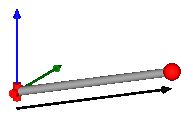
This joint aggregation has no mass and no inertia and introduces the constraint that the distance between the origin of frame_a and the origin of frame_b is constant (= Frames.length(rRod_ia)). The universal joint is defined in the following way:
The definition of axis 2 of the universal joint is performed according to the most often occuring case. In a future release, axis 2 might be explicitly definable via a parameter. However, the treatment is much more complicated and the number of operations is considerably higher, if axis 2 is not orthogonal to axis 1 and to the connecting rod.
Note, there is a singularity when axis 1 and the connecting rod are parallel to each other. Therefore, if possible n1_a should be selected in such a way that it is perpendicular to rRod_ia in the initial configuration (i.e., the distance to the singularity is as large as possible).
An additional frame_ia is present. It is fixed in the connecting rod at the origin of frame_a. The placement of frame_ia on the rod is implicitly defined by the universal joint (frame_a and frame_ia coincide when the angles of the two revolute joints of the universal joint are zero) and by parameter vector rRod_ia, the position vector from the origin of frame_a to the origin of frame_b, resolved in frame_ia.
The easiest way to define the parameters of this joint is by moving the MultiBody system in a reference configuration where all frames of all components are parallel to each other (alternatively, at least frame_a and frame_ia of the UniversalSpherical joint should be parallel to each other when defining an instance of this component). Since frame_a and frame_ia are parallel to each other, vector rRod_ia from frame_a to frame_b resolved in frame_ia can be resolved in frame_a (or the world frame, if all frames are parallel to each other).
This joint aggregation can be used in cases where in reality a rod with spherical joints at each end are present. Such a system has an additional degree of freedom to rotate the rod along its axis. In practice this rotation is usually of no interested and is mathematically removed by replacing one of the spherical joints by a universal joint. Still, in most cases the Joints.SphericalSpherical joint aggregation can be used instead of the UniversalSpherical joint since the rod is animated and its mass properties are approximated by a point mass in the middle of the rod. The SphericalSpherical joint has the advantage that it does not have a singular configuration.
In the public interface of the UniversalSpherical joint, the following (final) parameters are provided:
parameter Real rodLength(unit="m") "Length of rod"; parameter Real eRod_ia[3] "Unit vector along rod, resolved in frame_ia"; parameter Real e2_ia [3] "Unit vector along axis 2, resolved in frame_ia";
This allows a more convenient definition of data which is related to the rod. For example, if a box shall be connected at frame_ia directing from the origin of frame_a to the middle of the rod, this might be defined as:
MultiBody.Joints.UniversalSpherical jointUS(rRod_ia={1.2, 1, 0.2});
MultiBody.Visualizers.FixedShape shape(shapeType = "box",
lengthDirection = jointUS.eRod_ia,
widthDirection = jointUS.e2_ia,
length = jointUS.rodLength/2,
width = jointUS.rodLength/10);
equation
connect(jointUS.frame_ia, shape.frame_a);
| Name | Default | Description |
|---|---|---|
| animation | true | = true, if animation shall be enabled |
| showUniversalAxes | true | = true, if universal joint shall be visualized with two cylinders, otherwise with a sphere (provided animation=true) |
| computeRodLength | false | = true, if distance between frame_a and frame_b shall be computed during initialization (see info) |
| n1_a | {0,0,1} | Axis 1 of universal joint resolved in frame_a (axis 2 is orthogonal to axis 1 and to rod) |
| rRod_ia[3] | {1,0,0} | Vector from origin of frame_a to origin of frame_b, resolved in frame_ia (if computeRodLength=true, rRod_ia is only an axis vector along the connecting rod) [m] |
| sphereDiameter | world.defaultJointLength | Diameter of spheres representing the universal and the spherical joint [m] |
| sphereColor | MultiBody.Types.Defaults.JointColor | Color of spheres representing the universal and the spherical joint |
| rodShapeType | "cylinder" | Shape type of rod connecting the universal and the spherical joint |
| rodWidth | sphereDiameter/MultiBody.Types.Defaults.JointRodDiameterFraction | Width of rod shape in direction of axis 2 of universal joint. [m] |
| rodHeight | rodWidth | Height of rod shape in direction that is orthogonal to rod and to axis 2. [m] |
| rodExtra | 0.0 | Additional parameter depending on rodShapeType (see docu of Visualizers.FixedShape). |
| rodColor | MultiBody.Types.Defaults.RodColor | Color of rod shape connecting the universal and the spherical joints |
| cylinderLength | world.defaultJointLength | Length of cylinders representing the two universal joint axes [m] |
| cylinderDiameter | world.defaultJointWidth | Diameter of cylinders representing the two universal joint axes [m] |
| cylinderColor | Types.Defaults.JointColor | Color of cylinders representing the two universal joint axes |
| kinematicConstraint | true | = false, if no constraint shall be defined, due to analytically solving a kinematic loop |
| checkTotalPower | false | = true, if total power flowing into this component shall be determined (must be zero) |
model UniversalSpherical
"Universal - spherical joint aggregation (1 constraint, no potential states)"
import SI = Modelica.SIunits;
extends Interfaces.PartialTwoFrames;
Interfaces.Frame_a frame_ia;
parameter Boolean animation=true "= true, if animation shall be enabled";
parameter Boolean showUniversalAxes=true
" = true, if universal joint shall be visualized with two cylinders, otherwise with a sphere (provided animation=true)";
parameter Boolean computeRodLength=false
"= true, if distance between frame_a and frame_b shall be computed during initialization (see info)";
parameter MultiBody.Types.Axis n1_a={0,0,1}
"Axis 1 of universal joint resolved in frame_a (axis 2 is orthogonal to axis 1 and to rod)";
parameter SI.Position rRod_ia[3]={1,0,0}
"Vector from origin of frame_a to origin of frame_b, resolved in frame_ia (if computeRodLength=true, rRod_ia is only an axis vector along the connecting rod)";
parameter SI.Diameter sphereDiameter=world.defaultJointLength
"|Animation|if animation = true| Diameter of spheres representing the universal and the spherical joint";
parameter MultiBody.Types.Color sphereColor=MultiBody.Types.Defaults.JointColor
"|Animation|if animation = true| Color of spheres representing the universal and the spherical joint";
parameter MultiBody.Types.ShapeType rodShapeType="cylinder"
"|Animation|if animation = true| Shape type of rod connecting the universal and the spherical joint";
parameter SI.Distance rodWidth=sphereDiameter/MultiBody.Types.Defaults.
JointRodDiameterFraction
"|Animation|if animation = true| Width of rod shape in direction of axis 2 of universal joint.";
parameter SI.Distance rodHeight=rodWidth
"|Animation|if animation = true| Height of rod shape in direction that is orthogonal to rod and to axis 2.";
parameter Real rodExtra=0.0
"|Animation|if animation = true| Additional parameter depending on rodShapeType (see docu of Visualizers.FixedShape).";
parameter MultiBody.Types.Color rodColor=MultiBody.Types.Defaults.RodColor
"|Animation|if animation = true| Color of rod shape connecting the universal and the spherical joints";
parameter SI.Distance cylinderLength=world.defaultJointLength
"|Animation|if animation = true and showUniversalAxes| Length of cylinders representing the two universal joint axes";
parameter SI.Distance cylinderDiameter=world.defaultJointWidth
"|Animation|if animation = true and showUniversalAxes| Diameter of cylinders representing the two universal joint axes";
parameter MultiBody.Types.Color cylinderColor=Types.Defaults.JointColor
"|Animation|if animation = true and showUniversalAxes| Color of cylinders representing the two universal joint axes";
parameter Boolean kinematicConstraint=true
"|Advanced|| = false, if no constraint shall be defined, due to analytically solving a kinematic loop";
parameter Boolean checkTotalPower=false
"|Advanced|| = true, if total power flowing into this component shall be determined (must be zero)";
Frames.Orientation R_rel
"Relative orientation object to rotate from frame_a to frame_b";
SI.Force f_rod
"Constraint force in direction of the rod (positive, if rod is pressed)";
final parameter SI.Distance rodLength(fixed=not computeRodLength) =
Frames.length(rRod_ia)
"Length of rod (distance between origin of frame_a and origin of frame_b)";
final parameter Real eRod_ia[3]=Frames.normalize(rRod_ia)
"Unit vector from origin of frame_a to origin of frame_b, resolved in frame_ia";
final parameter Real e2_ia[3]=Frames.normalize(cross(n1_a, eRod_ia))
"Unit vector in direction of axis 2 of universal joint, resolved in frame_ia (orthogonal to n1_a and eRod_ia)a";
final parameter Real e3_ia[3]=cross(eRod_ia, e2_ia)
"Unit vector perpendicular to eRod_ia and e2_ia, resolved in frame_ia";
SI.Power totalPower
"Total power flowing into this element, if checkTotalPower=true (otherwise dummy)";
SI.Force f_b_a1[3]
"frame_b.f without f_rod part, resolved in frame_a (needed for analytic loop handling)";
Real eRod_a[3]
"Unit vector in direction of rRod_a, resolved in frame_a (needed for analytic loop handling)";
SI.Position rRod_0[3](start=rRod_ia)
"Position vector from origin of frame_a to origin of frame_b resolved in world frame";
SI.Position rRod_a[3](start=rRod_ia)
"Position vector from origin of frame_a to origin of frame_b resolved in frame_a";
protected
SI.Force f_b_a[3] "frame_b.f resolved in frame_a";
SI.Force f_ia_a[3] "frame_ia.f resolved in frame_a";
SI.Torque t_ia_a[3] "frame_ia.t resolved in frame_a";
Real n2_a[3]
"Vector in direction of axis 2 of the universal joint (e2_ia), resolved in frame_a";
Real length2_n2_a(unit="m2") "Square of length of vector n2_a";
Real e2_a[3]
"Unit vector in direction of axis 2 of the universal joint (e2_ia), resolved in frame_a";
Real e3_a[3]
"Unit vector perpendicular to eRod_ia and e2_a, resolved in frame_a";
Real T_rel_ia[3, 3];
Frames.Orientation R_rel_ia "Rotation from frame_a to frame_ia";
parameter Integer ndim=if world.enableAnimation and animation then 1 else 0;
parameter Integer ndim1=if world.enableAnimation and animation and not
showUniversalAxes then 1 else 0;
parameter Integer ndim2=if world.enableAnimation and animation and
showUniversalAxes then 1 else 0;
Visualizers.Advanced.Shape rodShape[ndim](
each shapeType=rodShapeType,
each color=rodColor,
each length=rodLength,
each width=rodWidth,
each height=rodHeight,
each lengthDirection=eRod_ia,
each widthDirection=e2_ia,
each r=frame_ia.r_0,
each R=frame_ia.R);
Visualizers.Advanced.Shape sphericalShape_b[ndim](
each shapeType="sphere",
each color=sphereColor,
each length=sphereDiameter,
each width=sphereDiameter,
each height=sphereDiameter,
each lengthDirection={1,0,0},
each widthDirection={0,1,0},
each r_shape={-0.5,0,0}*sphereDiameter,
each r=frame_b.r_0,
each R=frame_b.R);
Visualizers.Advanced.Shape sphericalShape_a[ndim1](
each shapeType="sphere",
each color=sphereColor,
each length=sphereDiameter,
each width=sphereDiameter,
each height=sphereDiameter,
each lengthDirection={1,0,0},
each widthDirection={0,1,0},
each r_shape={-0.5,0,0}*sphereDiameter,
each r=frame_a.r_0,
each R=frame_a.R);
Visualizers.Advanced.Shape universalShape1[ndim2](
each shapeType="cylinder",
each color=cylinderColor,
each length=cylinderLength,
each width=cylinderDiameter,
each height=cylinderDiameter,
each lengthDirection=n1_a,
each widthDirection={0,1,0},
each r_shape=-n1_a*(cylinderLength/2),
each r=frame_a.r_0,
each R=frame_a.R);
Visualizers.Advanced.Shape universalShape2[ndim2](
each shapeType="cylinder",
each color=cylinderColor,
each length=cylinderLength,
each width=cylinderDiameter,
each height=cylinderDiameter,
each lengthDirection=e2_ia,
each widthDirection={0,1,0},
each r_shape=-e2_ia*(cylinderLength/2),
each r=frame_ia.r_0,
each R=frame_ia.R);
equation
defineBranch(frame_a.R, frame_ia.R);
rRod_0 = frame_b.r_0 - frame_a.r_0;
rRod_a = Frames.resolve2(frame_a.R, rRod_0);
// Constraint equation
if kinematicConstraint then
0 = rRod_0*rRod_0 - rodLength*rodLength;
end if;
/* Determine relative Rotation R_rel_ia from frame_a to frame_ia
and absolute rotation of frame_a.R.
*/
eRod_a = rRod_a/rodLength;
n2_a = cross(n1_a, eRod_a);
length2_n2_a = n2_a*n2_a;
assert(noEvent(length2_n2_a > 1.e-10), "
A MultiBody.Joints.UniversalSpherical joint (consisting of
a universal joint and a spherical joint connected together
by a rigid rod) is in the singular configuration of the
universal joint. This means that axis 1 of the universal
joint defined via parameter \"n1_a\" is parallel to vector
\"rRod_ia\" that is directed from the origin of frame_a to the
origin of frame_b.
You may try to use another \"n1_a\" vector. If this fails,
use instead MultiBody.Joints.SphericalSpherical, if this is
possible, because this joint aggregation does not have a
singular configuration.
");
e2_a = n2_a/sqrt(length2_n2_a);
e3_a = cross(eRod_a, e2_a);
T_rel_ia = [eRod_ia, e2_ia, e3_ia]*transpose([eRod_a, e2_a, e3_a]);
R_rel_ia = Frames.from_T(T_rel_ia);
// Compute kinematic quantities of frame_ia
frame_ia.r_0 = frame_a.r_0;
frame_ia.R = Frames.absoluteRotation(frame_a.R, R_rel_ia);
/* In the following formulas f_a, f_b, f_ia, t_a, t_b, t_ia are
the forces and torques at frame_a, frame_b, frame_ia, respectively,
resolved in frame_a. e_x, e_y, e_z are the unit vectors resolved in frame_a.
Torque balance at the rod around the origin of frame_a:
0 = t_a + t_ia + cross(rRod_a, f_b)
with
rRod_a = rodLength*e_x
f_b = -f_rod*e_x + f_b[2]*e_y + f_b[3]*e_z
follows:
0 = t_a + t_ia + rodLength*(f_b[2]*e_z - f_b[3]*e_y)
The projection of t_a with respect to universal joint axes vanishes:
n1_a*t_a = 0
e_y*t_a = 0
Therefore:
0 = n1_a*t_ia + rodLength*f_b[2]*(n1_a*e_z)
0 = e_y*t_ia - rodLength*f_b[3]
or
f_b = -f_rod*e_x - e_y*(n1_a*t_ia)/(rodLength*(n1_a*e_z)) + e_z*(e_y*t_ia)/rodLength
Force balance:
0 = f_a + f_b + f_ia
*/
R_rel = Frames.relativeRotation(frame_a.R, frame_b.R);
[f_ia_a, t_ia_a] = Frames.multipleResolve1(R_rel_ia, [frame_ia.f, frame_ia.t]);
// f_b_a1 is needed in aggregation joints to solve kinematic loops analytically
f_b_a1 = -e2_a*((n1_a*t_ia_a)/(rodLength*(n1_a*e3_a))) + e3_a*((e2_a*t_ia_a)/
rodLength);
f_b_a = -f_rod*eRod_a + f_b_a1;
frame_b.f = Frames.resolve2(R_rel, f_b_a);
frame_b.t = zeros(3);
zeros(3) = frame_a.f + f_b_a + f_ia_a;
zeros(3) = frame_a.t + t_ia_a + cross(rRod_a, f_b_a);
// Measure power for test purposes
if checkTotalPower then
totalPower = frame_a.f*Frames.resolve2(frame_a.R, der(frame_a.r_0)) +
frame_b.f*Frames.resolve2(frame_b.R, der(frame_b.r_0)) + frame_ia.f*
Frames.resolve2(frame_ia.R, der(frame_ia.r_0)) + frame_a.t*
Frames.angularVelocity2(frame_a.R, der(frame_a.R)) + frame_b.t*
Frames.angularVelocity2(frame_b.R, der(frame_b.R)) + frame_ia.t*
Frames.angularVelocity2(frame_ia.R, der(frame_ia.R));
else
totalPower = 0;
end if;
end UniversalSpherical;